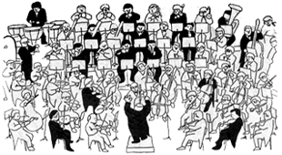

Concerts
Members
Friends
About
7:30pm Saturday 18th June 2016 St Matthew's Church, Northampton. NN1 4RY
Buy Tickets

RIVIERA REVERIES
Rodrigo - Concierto de Aranjuez
Gershwin - Cuban Overture
Lloyd - Symphony No.9
Debussy - L'Isle Joyeuse
Arnold - Cornish Dances
Barry - Out of Africa
John Gibbons ~ Conductor
Graham Roberts ~ Guitar
Stephen Hague ~ Leader
7:30pm Saturday 18th June 2016 St Matthew's Church, Northampton. NN1 4RY
Buy Tickets
Tickets:
Adults:
£14
Concessions:
£12
Under 16: 2 Free with an adult ticket, or
£7
thereafter